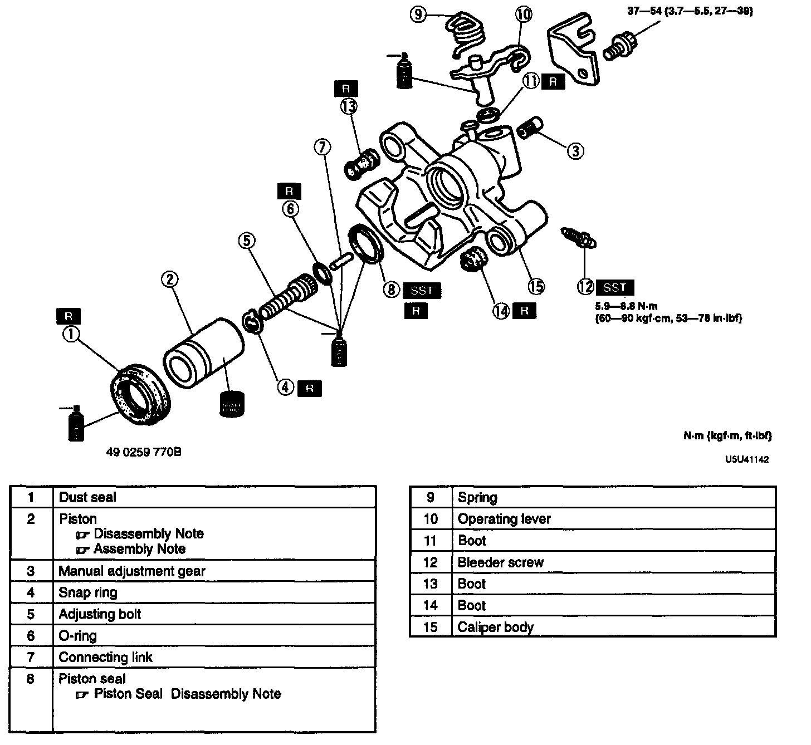
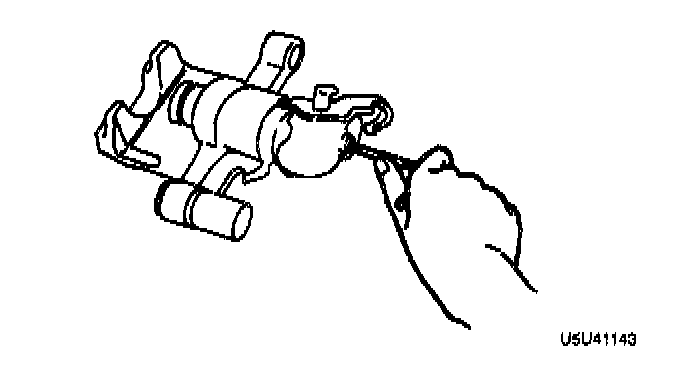

Rear

CALIPER (REAR) DISASSEMBLY/ASSEMBLY
1. Disassemble in the order indicated in the table.
2. Assemble in the reverse order of disassembly.
Piston Disassembly Note

1. Turn the manual adjustment gear clockwise by using an Allen wrench. (Turn the manual adjustment gear until it turns easily.)
2. Remove the piston.
Piston Assembly Note
^ Insert the piston into the caliper and turn the adjustment gear counterclockwise by using an Allen wrench to pull the piston in fully. (Turn the adjustment gear until it stops.)